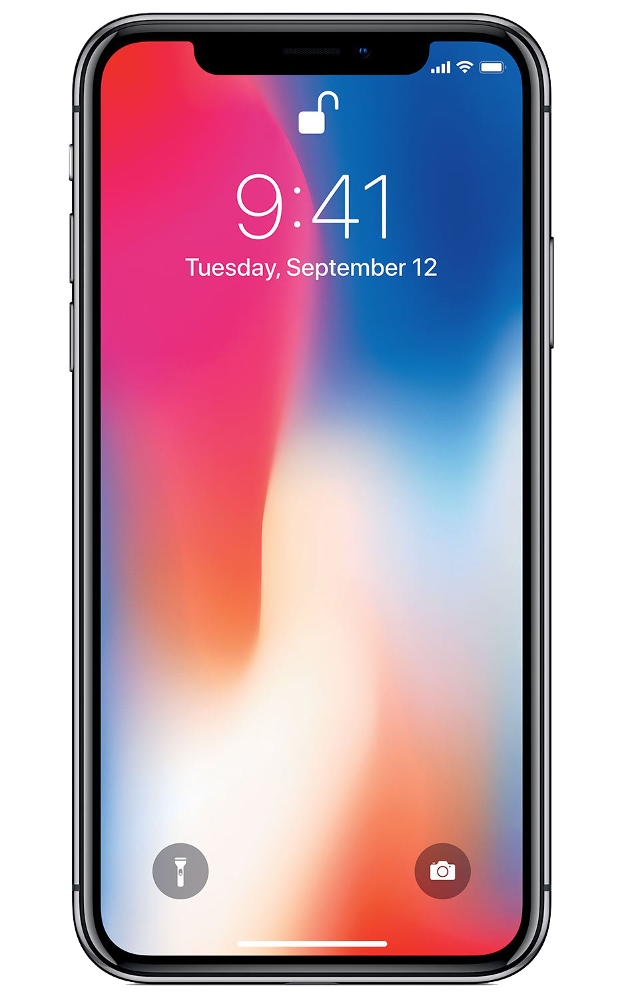

Cellphones
History
A handheld mobile radio telephone service was envisioned in the early stages of radio engineering. In 1917, Finnish inventor Eric Tigerstedt filed a patent for a "pocket-size folding telephone with a very thin carbon microphone". Early predecessors of cellular phones included analog radio communications from ships and trains. The race to create truly portable telephone devices began after World War II, with developments taking place in many countries. The advances in mobile telephony have been traced in successive "generations", starting with the early zeroth-generation (0G) services, such as Bell System's Mobile Telephone Service and its successor, the Improved Mobile Telephone Service. These 0G systems were not cellular, supported few simultaneous calls, and were very expensive.
Description
A mobile phone is a portable telephone that can make and receive calls over a radio frequency link while the user is moving within a telephone service area. The radio frequency link establishes a connection to the switching systems of a mobile phone operator, which provides access to the public switched telephone network (PSTN). Modern mobile telephone services use a cellular network architecture, and, therefore, mobile telephones are called cellular telephones or cell phones, in North America. In addition to telephony, 2000s-era mobile phones support a variety of other services, such as text messaging, MMS, email, Internet access, short-range wireless communications (infrared, Bluetooth), business applications, video games, and digital photography. Mobile phones offering only those capabilities are known as feature phones; mobile phones which offer greatly advanced computing capabilities are referred to as smartphones.
